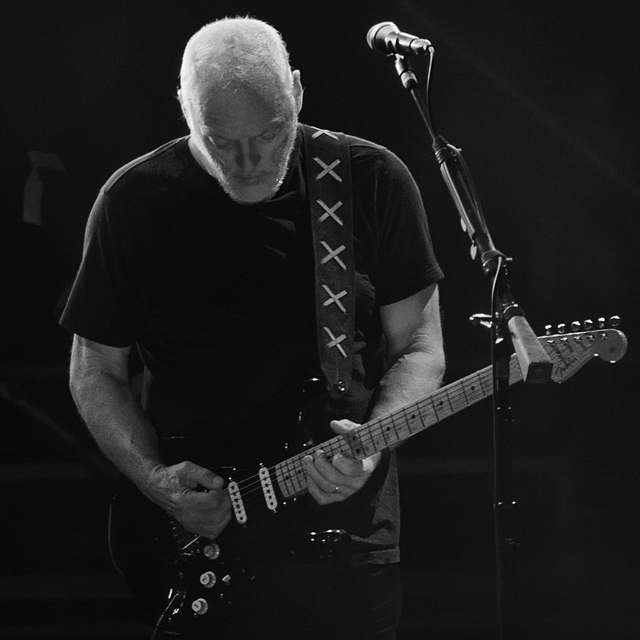
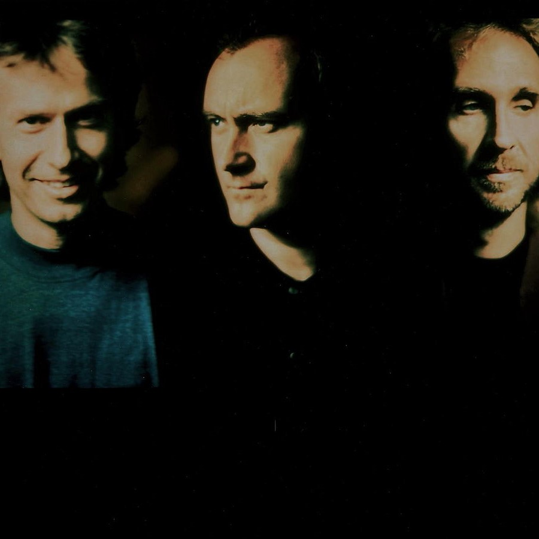

Read more... jambase.com
Happy Birthday David Gilmour: Pink Floyd Live In Melbourne 1988
David Gilmour celebrates his 74th birthday today. The legendary Pink Floyd guitarist and vocalist was born on March 6, 1946 in Cambridge, England. Gilmour would join Pink Floyd at a pivotal moment in the band’s early career when founding guitarist and lead singer Syd Barrett left the group.Read more... jambase.com
King Crimson & Zappa Band Announce North American Summer Tour 2020
This summer, King Crimson and an ensemble consisting of alumni from Frank Zappa’s bands will join forces for a tour of North America. An announcement on KC’s DGMLive.com website notes the tour will span six weeks in June and early July. So far, just one concert of the run has been confirmed.Read more... jambase.com
Yes guitarist Steve Howe: Jon Anderson and I get on really well now
Steve Howe speaks exclusively to this month’s Classic Rock magazine about his acclaimed career and his relationship with the band's former frontman Jon Anderson.Read more... loudersound.com

Read more... cnn.com
Rock band Genesis to reunite for first tour in 13 years
Phil Collins, Tony Banks and Mike Rutherford made the announcement during an appearance on Zoe Ball's BBC Radio 2 breakfast show Wednesday morning. Revealing details of their comeback tour, they said they will perform a series of shows across the UK later this year.Read more... cnn.com